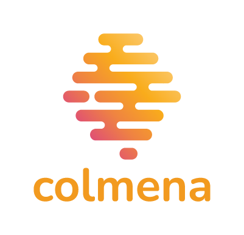

online: https://github.io/chgp/fib2022
Forum da Internet Brasil 2022 - Natal - RN - Brasil Debate de como a pandemia impactou nos processos colaborativos e como o desafio do distanciamento social e uso mais intenso da internet se transformou em oportunidade para discutir a governança democrática. A partir do problema da dependência das bigtechs para utilizar serviços de web as/os palestrantes irão apresentar alternativas para lidar com as adversidades do atual cenário, em especial o uso de software livre e a apropriação de metodologias corporativas para uso em projetos comunitários.
Debater soluções alternativas às big techs na gestão descentralizada de iniciativas e organizações, com ênfase no uso de software livre como propulsor de práticas colaborativas que visam promover modelos de governança democrática. Com o intuito de debater o conceito de inovação democrática digital serão apresentadas iniciativas que resultaram do cenário adverso da pandemia. Como estudo de caso será avaliado o projeto Colmena, iniciativa governamental realizada pelo Ministério para Cooperação e Desenvolvimento da Alemanha em parceria com a Deutsche Welle Akademie.

Em tempos de crise, dispor de informações confiáveis salva vidas. Como podemos garantir que os meio de comunicação locais produzam informação em tempos perturbados? DW Akademie associada de REDES A.C lançam Colmena - uma solução de código aberto para os meios locais e comunitários
[-] Ferramentas autogestionadas
[X] Gitlab[ ] prototipação[ ] Flowcharts[X] publicar códigos gerados em licenças livres[ ] Dev cíclico[ ] (Co)Existir além das lojas de aplicativos comerciais[ ] toolkit multimidia com sincronização em nuvem[ ] capacidades de federação[ ] capacidades multimídia[ ] Conferência Web RTC[ ] escalabilidade para instâncias com grande capacidade de usuarios[ ] multiusuário, multi grupo (medias/ honeycombs)[ ] compartilhamento interno/público,[ ] Segurança[ ] Design[ ] Desenvolvimento[ ] Teste[ ] Modelo bazar equipe pequena, metodologia catedral?[ ] 20 anos do modelo de ESR[ ] ambientes rígidos corporativos adotaram métodos ágeis, mais iterativos[ ] contribuição para projetos de interesse ->[ ] evitar o uso de infraestrutura de terceiros, big techs
[ ] datacenters?[ ] Infraestrutura de dev e deploy própriosManutenção equipe, RH, admin
[ ] agile x XGH
[ ] Transparência: common design patterns, fácil entendimento de 3os.[ ] Inspeção: Inspecionar as novas versões afim de evitar retrocessos.[ ] Adaptação: Fazer ajuste o mais breve possível para minimizar desvios e erros.[ ] SCRUMbiarra, uso de metodologias de engenharia de software de forma crítica[ ] Interesse comunitário[ ] Participação coletiva[ ] Patrocinio[ ] Modelos de monetização[ ] Manutenção do desenvolvimento[ ] Manutenção de infraestrutura[ ] Modelo de nuvem é de certa forma centralizado[ ] Quem mantém as nuvens?[ ] VPC - Virtual Private Clouds x terceririzadas🗿Carlos Henrique G. Paulino
📧 chgp at riseup.net
➤ @ceaga
🐘 @ceaga
[ ] Kilamo, T., Lenarduzzi, V., Ahoniemi, T., Jaaksi, A., Rahikkala, J., Mikkonen, T. (2020). How the Cathedral Embraced the Bazaar, and the Bazaar Became a Cathedral. In: Ivanov, V., Kruglov, A., Masyagin, S., Sillitti, A., Succi, G. (eds) Open Source Systems. OSS 2020. IFIP Advances in Information and Communication Technology, vol 582. Springer, Cham. https://doi.org/10.1007/978-3-030-47240-5_14